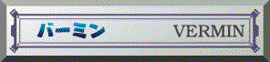
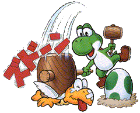
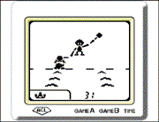
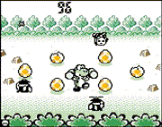

 ●むかしモード モゴモゴと地中を進んできて、手前でポコと顔を出すあいきょうのあるモグラが次々に休むことなく進んできます。この主人公がモグラに恨みがあるのかどうかは別にして、でかいハンマーでモグラを叩きまくりましょう！ ★上達へのコツ ミスクリアがないので、慎重にプレイしましょう。リズムに乗って叩くのがコツです。  ●いまモード 敵がいたる所からヨッシーのたまごをめざして飛んできます。なんと同時に6個のたまごを守らなければなりません。このゲームをしているうちに、あなたに母性本能がめざめるかも？ ★上達へのコツ たまごは3回叩かれると割れるので、1度でも叩かれたたまごを優先して守りましょう。1度もミスをしないでがんばっていると、ボーナス得点がもらえ更にたまごが何かに変化します。 |
   |